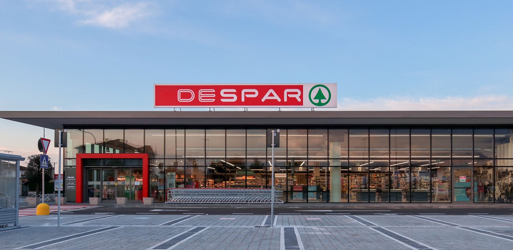
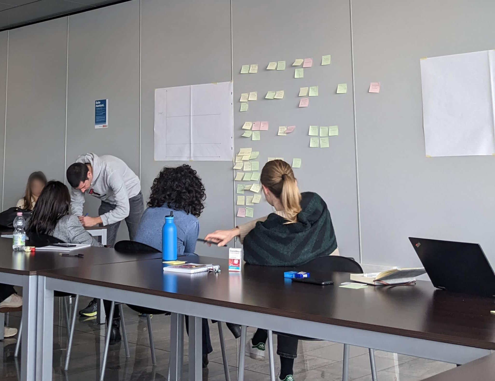
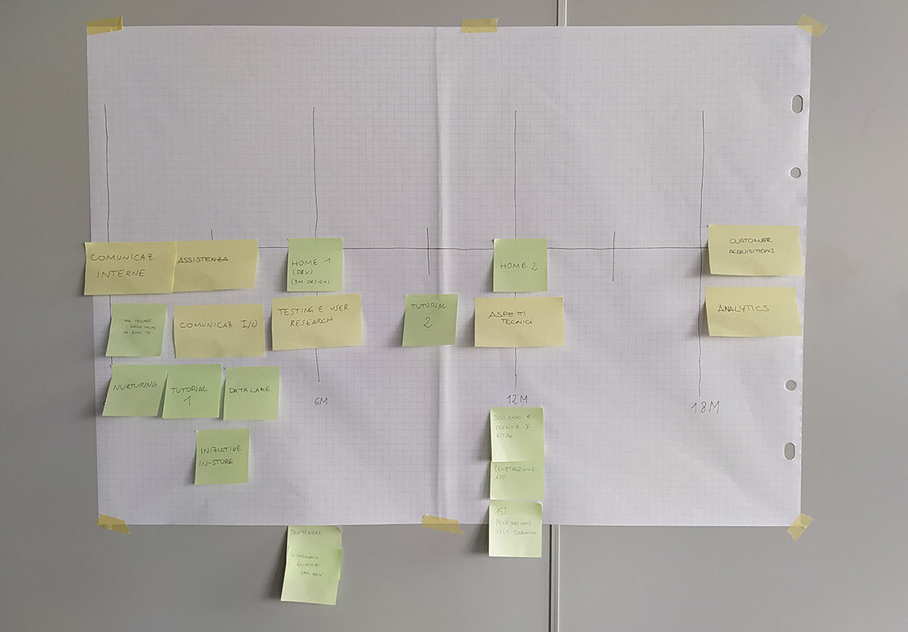
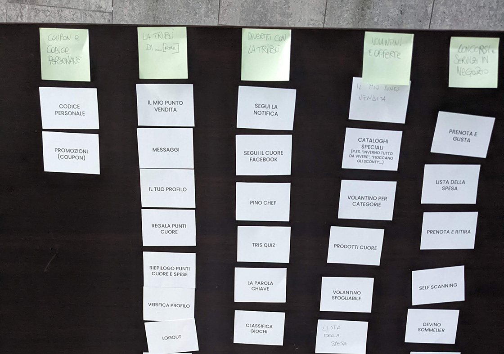
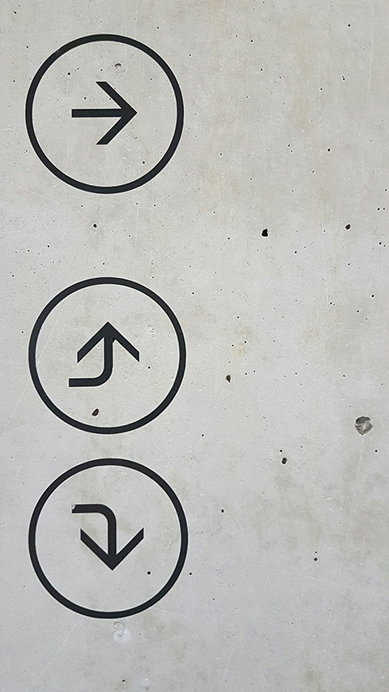
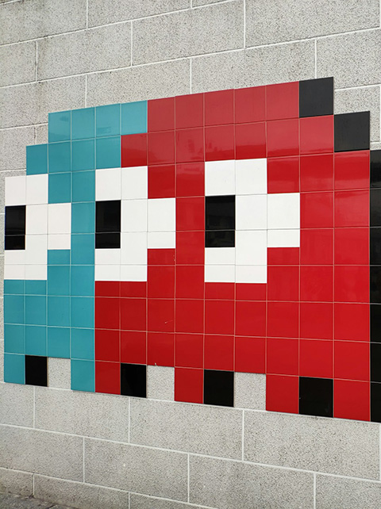
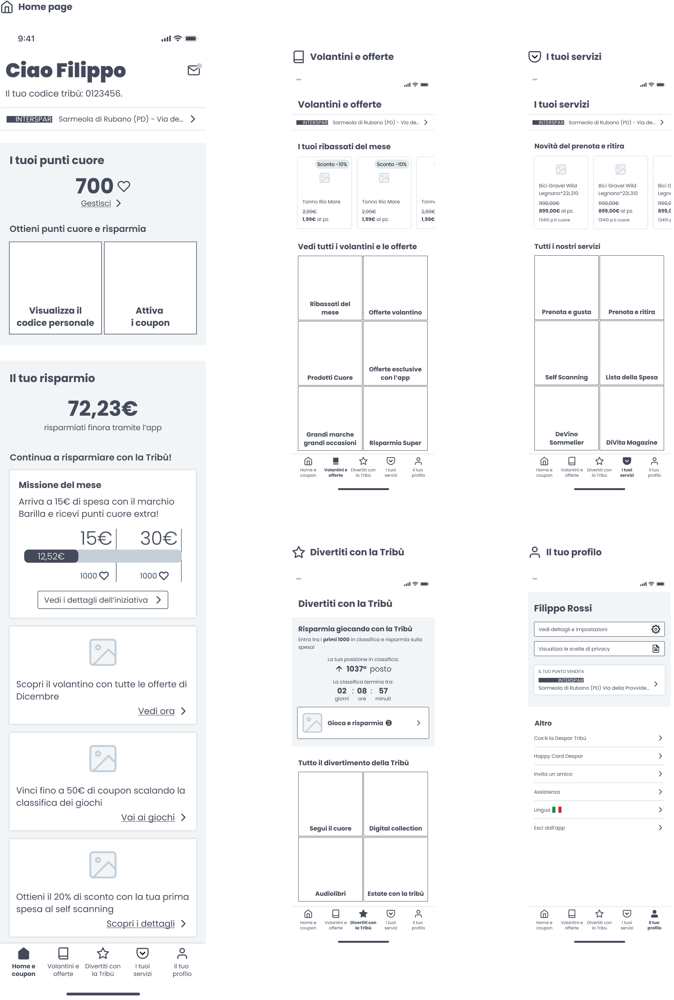
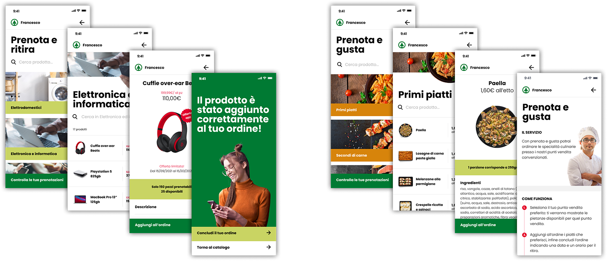
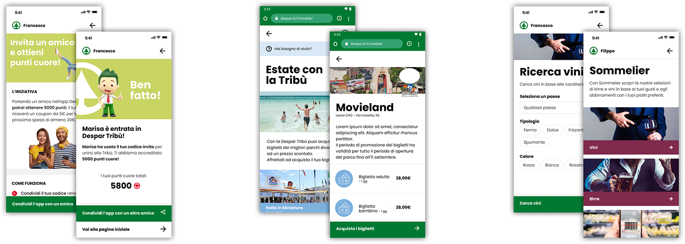

- 1 UX designer
- 1 UI designer
- 1 Functional analyst
- 1 Project manager
- Figma
- Useberry
- Google suite
- Typeform
Table of contents
Overview

Process
workshop
research
wireframing
Workshop
A one-day discovery workshop was scheduled in order to explore needs, pinpoint them, understand their impact and effort needed to fulfill them; last but not least, planning next steps in the app development based on what came to light.
Stakeholders of all branches have been involved in order to cover problems of the whole organization’s spectrum.
The first activity was mapping objectives: within 5 minutes, everyone had to write on a single post-it each need or goal considered relevant to their professional responsibilities and to the organization’s direction.
All post-its were then collected and affixed to the wall. We then collectively grouped together the post-its that shared the same theme or objectives, creating clusters. A descriptive title was assigned to each cluster.
Next step was building a priority matrix. We assessed impact on business/user and effort needed to achieve each objective; then we assigned the respective post-it to the matrix.
Positioning in the matrix gave us an understanding of which needs had the priority, what to do first and what not to pursuit.

This task involved moving all post-its from the priority matrix to a timeline from the workshop’s day to the next 18 months. This way needs and objectives were formalized into a planning that was based on feasible tasks.
A refined version of this timeline, as all of the insights emerged from this workshop, were shared to all the stakeholders.


Since a review of the app’s homepage and navigation was one of the hot topics, we took this opportunity to do a card sorting activity.
We brought a deck of cards representing each app’s functionality for participants to group into themes. Because of the large number of cards, an iterative approach was adopted: first participants were asked to create 8 groups of cards, after that we asked to narrow them down to 5 groups and name each group.
This work was used as one of several references for the app’s redesign later on.
User research
In order to assess users’ needs, pain points and priorities related to both the app and the overall shopping experience, we planned different user research activities. Focus was narrowed to the existing user base to ensure that any design evolution would strengthen engagement rather than compromise it, preventing decisions that might lead users to abandon the app.
3 key areas guided the research planning:
- Despar customers’ shopping routines;
- their technological habits and proficiency;
- the app’s most used features and user motivations.
Two different quantitative surveys were carried out in different timeframes.
Surveys were an important quantitative indicator that has been accompanied by open questions for some qualitative data, gathering any type of suggestion or need out of the survey’s track.
Surveys were sent to a selection of people from the user pool subscribed to Despar’s newsletter.
7 semi-structured interviews were carried out, leaving space for interviewees to express their thoughts freely.
Acquiring candidates was done through previously sent surveys. To get as much variety as possible, users of different social background, gender and shopping habits have been selected.
Users were awarded with a coupon for their next purchase in Despar’s shops.
Other elements have been taken into account while performing the research in order to achieve a complete perspective, including contextual elements:
- an in-depth study of the app’s analytics provided by third parties
- an examination of the existing app and its historical evolution
- a benchmark of competitors’ apps in the mass retail industry has been performed
Insights
A great amount of insights emerged from the user research: here you can find part of them.
Greater clarity is needed on how to use discounts. [...] The explanations are ambiguous; I once lost the discount because of this
Change the label “Cataloghi speciali” to “Volantini”
For the prize collection section, it would have been clearer to write “prenota e ritira” instead of just “ritira”
As far as I’m concerned, there’s too much going on
I have nothing to complain about regarding the app… I find it simple, with its big square buttons
The home screen should be improved to make it easier to access the submenus used most frequently


The number of plays is based on number of purchases, not on total amount spent
Not everyone likes social games, since they’re the only ones that let you earn points immediately but require a social media profile
They’re not liked [games] because they don’t let you earn points right away
Lo-fi wireframing
Having gathered all the relevant data and insights, a lo-fi wireframing phase was started.
Several challenges were tackled:
- The urge to align Despar Tribù to the industry standard of retail apps
- Managing the wide complexity of sections and functionalities, engaging users to explore
- Renovating navigation without disrupting the user base, accustomed to the old design

In the meantime...
While research and design process for the home and navigation were progressing, various short-term tasks were handled.


Next steps
Next step in the designing journey included user testing of our lo-fi wireframes, iterate the design and testing process in light of user feedback and finally proceed to design the high fidelity version before handing over to developers.
What I learnt
My proactivity was what propelled initiative in this project, proposing activities to plan an evolution of the app rather than risking its stagnation. I learnt the importance of an enterprising spirit, how to draft important business documents (benchmarks, research results) in a communicative way, managing effectively concurrent tasks that influence both day-to-day problems and long term advancement.